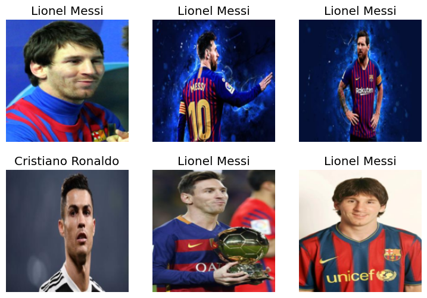
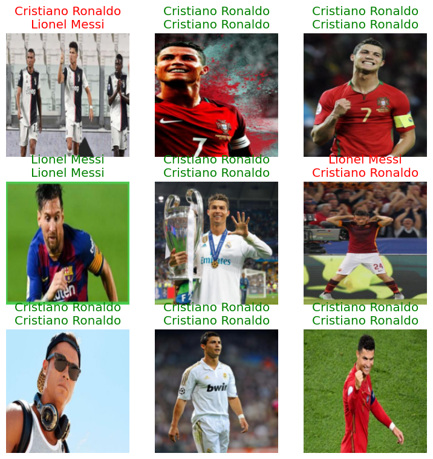

from fastcore.all import *
from fastai.vision.all import *
from PIL import Image
def search_images(term, max_images=30):
"term : (string )name of the search target"
print(f"Searching for '{term}'")
return search_images_ddg(term, max_images)
Goat Detector Training
This notebook utilizes the fastai and fastbook libraries to train a machine learning model for image classification. The goal is to classify images as either featuring Messi or Cristiano Ronaldo, two renowned football players. ## Importing Necessary Libraries Import fastai and fastbook libraries essential for image loading, preparation, and machine learning model operations.
%pip install -Uqq fastai fastbook Pillow nbdev
import fastbook
fastbook.setup_book()
from fastbook import *Requirement already satisfied: nbdev in /Users/jasonsuarez/anaconda3/envs/pydata-book/lib/python3.10/site-packages (2.3.13)
Requirement already satisfied: ipywidgets<=8.0.4 in /Users/jasonsuarez/anaconda3/envs/pydata-book/lib/python3.10/site-packages (from nbdev) (7.7.2)
Requirement already satisfied: fastcore>=1.5.27 in /Users/jasonsuarez/anaconda3/envs/pydata-book/lib/python3.10/site-packages (from nbdev) (1.5.29)
Requirement already satisfied: execnb>=0.1.4 in /Users/jasonsuarez/anaconda3/envs/pydata-book/lib/python3.10/site-packages (from nbdev) (0.1.5)
Requirement already satisfied: astunparse in /Users/jasonsuarez/anaconda3/envs/pydata-book/lib/python3.10/site-packages (from nbdev) (1.6.3)
Requirement already satisfied: ghapi>=1.0.3 in /Users/jasonsuarez/anaconda3/envs/pydata-book/lib/python3.10/site-packages (from nbdev) (1.0.4)
Requirement already satisfied: watchdog in /Users/jasonsuarez/anaconda3/envs/pydata-book/lib/python3.10/site-packages (from nbdev) (3.0.0)
Requirement already satisfied: asttokens in /Users/jasonsuarez/anaconda3/envs/pydata-book/lib/python3.10/site-packages (from nbdev) (2.4.1)
Requirement already satisfied: PyYAML in /Users/jasonsuarez/anaconda3/envs/pydata-book/lib/python3.10/site-packages (from nbdev) (6.0.1)
Requirement already satisfied: ipython in /Users/jasonsuarez/anaconda3/envs/pydata-book/lib/python3.10/site-packages (from execnb>=0.1.4->nbdev) (8.20.0)
Requirement already satisfied: pip in /Users/jasonsuarez/anaconda3/envs/pydata-book/lib/python3.10/site-packages (from fastcore>=1.5.27->nbdev) (23.3.2)
Requirement already satisfied: packaging in /Users/jasonsuarez/anaconda3/envs/pydata-book/lib/python3.10/site-packages (from fastcore>=1.5.27->nbdev) (23.2)
Requirement already satisfied: ipykernel>=4.5.1 in /Users/jasonsuarez/anaconda3/envs/pydata-book/lib/python3.10/site-packages (from ipywidgets<=8.0.4->nbdev) (6.28.0)
Requirement already satisfied: ipython-genutils~=0.2.0 in /Users/jasonsuarez/anaconda3/envs/pydata-book/lib/python3.10/site-packages (from ipywidgets<=8.0.4->nbdev) (0.2.0)
Requirement already satisfied: traitlets>=4.3.1 in /Users/jasonsuarez/anaconda3/envs/pydata-book/lib/python3.10/site-packages (from ipywidgets<=8.0.4->nbdev) (5.14.1)
Requirement already satisfied: widgetsnbextension~=3.6.0 in /Users/jasonsuarez/anaconda3/envs/pydata-book/lib/python3.10/site-packages (from ipywidgets<=8.0.4->nbdev) (3.6.6)
Requirement already satisfied: jupyterlab-widgets<3,>=1.0.0 in /Users/jasonsuarez/anaconda3/envs/pydata-book/lib/python3.10/site-packages (from ipywidgets<=8.0.4->nbdev) (1.1.7)
Requirement already satisfied: six>=1.12.0 in /Users/jasonsuarez/anaconda3/envs/pydata-book/lib/python3.10/site-packages (from asttokens->nbdev) (1.16.0)
Requirement already satisfied: wheel<1.0,>=0.23.0 in /Users/jasonsuarez/anaconda3/envs/pydata-book/lib/python3.10/site-packages (from astunparse->nbdev) (0.42.0)
Requirement already satisfied: appnope in /Users/jasonsuarez/anaconda3/envs/pydata-book/lib/python3.10/site-packages (from ipykernel>=4.5.1->ipywidgets<=8.0.4->nbdev) (0.1.3)
Requirement already satisfied: comm>=0.1.1 in /Users/jasonsuarez/anaconda3/envs/pydata-book/lib/python3.10/site-packages (from ipykernel>=4.5.1->ipywidgets<=8.0.4->nbdev) (0.2.1)
Requirement already satisfied: debugpy>=1.6.5 in /Users/jasonsuarez/anaconda3/envs/pydata-book/lib/python3.10/site-packages (from ipykernel>=4.5.1->ipywidgets<=8.0.4->nbdev) (1.8.0)
Requirement already satisfied: jupyter-client>=6.1.12 in /Users/jasonsuarez/anaconda3/envs/pydata-book/lib/python3.10/site-packages (from ipykernel>=4.5.1->ipywidgets<=8.0.4->nbdev) (8.6.0)
Requirement already satisfied: jupyter-core!=5.0.*,>=4.12 in /Users/jasonsuarez/anaconda3/envs/pydata-book/lib/python3.10/site-packages (from ipykernel>=4.5.1->ipywidgets<=8.0.4->nbdev) (5.7.1)
Requirement already satisfied: matplotlib-inline>=0.1 in /Users/jasonsuarez/anaconda3/envs/pydata-book/lib/python3.10/site-packages (from ipykernel>=4.5.1->ipywidgets<=8.0.4->nbdev) (0.1.6)
Requirement already satisfied: nest-asyncio in /Users/jasonsuarez/anaconda3/envs/pydata-book/lib/python3.10/site-packages (from ipykernel>=4.5.1->ipywidgets<=8.0.4->nbdev) (1.5.8)
Requirement already satisfied: psutil in /Users/jasonsuarez/anaconda3/envs/pydata-book/lib/python3.10/site-packages (from ipykernel>=4.5.1->ipywidgets<=8.0.4->nbdev) (5.9.7)
Requirement already satisfied: pyzmq>=24 in /Users/jasonsuarez/anaconda3/envs/pydata-book/lib/python3.10/site-packages (from ipykernel>=4.5.1->ipywidgets<=8.0.4->nbdev) (25.1.2)
Requirement already satisfied: tornado>=6.1 in /Users/jasonsuarez/anaconda3/envs/pydata-book/lib/python3.10/site-packages (from ipykernel>=4.5.1->ipywidgets<=8.0.4->nbdev) (6.3.3)
Requirement already satisfied: decorator in /Users/jasonsuarez/anaconda3/envs/pydata-book/lib/python3.10/site-packages (from ipython->execnb>=0.1.4->nbdev) (5.1.1)
Requirement already satisfied: jedi>=0.16 in /Users/jasonsuarez/anaconda3/envs/pydata-book/lib/python3.10/site-packages (from ipython->execnb>=0.1.4->nbdev) (0.19.1)
Requirement already satisfied: prompt-toolkit<3.1.0,>=3.0.41 in /Users/jasonsuarez/anaconda3/envs/pydata-book/lib/python3.10/site-packages (from ipython->execnb>=0.1.4->nbdev) (3.0.42)
Requirement already satisfied: pygments>=2.4.0 in /Users/jasonsuarez/anaconda3/envs/pydata-book/lib/python3.10/site-packages (from ipython->execnb>=0.1.4->nbdev) (2.17.2)
Requirement already satisfied: stack-data in /Users/jasonsuarez/anaconda3/envs/pydata-book/lib/python3.10/site-packages (from ipython->execnb>=0.1.4->nbdev) (0.6.2)
Requirement already satisfied: exceptiongroup in /Users/jasonsuarez/anaconda3/envs/pydata-book/lib/python3.10/site-packages (from ipython->execnb>=0.1.4->nbdev) (1.2.0)
Requirement already satisfied: pexpect>4.3 in /Users/jasonsuarez/anaconda3/envs/pydata-book/lib/python3.10/site-packages (from ipython->execnb>=0.1.4->nbdev) (4.8.0)
Requirement already satisfied: notebook>=4.4.1 in /Users/jasonsuarez/anaconda3/envs/pydata-book/lib/python3.10/site-packages (from widgetsnbextension~=3.6.0->ipywidgets<=8.0.4->nbdev) (7.0.6)
Requirement already satisfied: parso<0.9.0,>=0.8.3 in /Users/jasonsuarez/anaconda3/envs/pydata-book/lib/python3.10/site-packages (from jedi>=0.16->ipython->execnb>=0.1.4->nbdev) (0.8.3)
Requirement already satisfied: python-dateutil>=2.8.2 in /Users/jasonsuarez/anaconda3/envs/pydata-book/lib/python3.10/site-packages (from jupyter-client>=6.1.12->ipykernel>=4.5.1->ipywidgets<=8.0.4->nbdev) (2.8.2)
Requirement already satisfied: platformdirs>=2.5 in /Users/jasonsuarez/anaconda3/envs/pydata-book/lib/python3.10/site-packages (from jupyter-core!=5.0.*,>=4.12->ipykernel>=4.5.1->ipywidgets<=8.0.4->nbdev) (4.1.0)
Requirement already satisfied: jupyter-server<3,>=2.4.0 in /Users/jasonsuarez/anaconda3/envs/pydata-book/lib/python3.10/site-packages (from notebook>=4.4.1->widgetsnbextension~=3.6.0->ipywidgets<=8.0.4->nbdev) (2.12.4)
Requirement already satisfied: jupyterlab-server<3,>=2.22.1 in /Users/jasonsuarez/anaconda3/envs/pydata-book/lib/python3.10/site-packages (from notebook>=4.4.1->widgetsnbextension~=3.6.0->ipywidgets<=8.0.4->nbdev) (2.25.2)
Requirement already satisfied: jupyterlab<5,>=4.0.2 in /Users/jasonsuarez/anaconda3/envs/pydata-book/lib/python3.10/site-packages (from notebook>=4.4.1->widgetsnbextension~=3.6.0->ipywidgets<=8.0.4->nbdev) (4.0.10)
Requirement already satisfied: notebook-shim<0.3,>=0.2 in /Users/jasonsuarez/anaconda3/envs/pydata-book/lib/python3.10/site-packages (from notebook>=4.4.1->widgetsnbextension~=3.6.0->ipywidgets<=8.0.4->nbdev) (0.2.3)
Requirement already satisfied: ptyprocess>=0.5 in /Users/jasonsuarez/anaconda3/envs/pydata-book/lib/python3.10/site-packages (from pexpect>4.3->ipython->execnb>=0.1.4->nbdev) (0.7.0)
Requirement already satisfied: wcwidth in /Users/jasonsuarez/anaconda3/envs/pydata-book/lib/python3.10/site-packages (from prompt-toolkit<3.1.0,>=3.0.41->ipython->execnb>=0.1.4->nbdev) (0.2.13)
Requirement already satisfied: executing>=1.2.0 in /Users/jasonsuarez/anaconda3/envs/pydata-book/lib/python3.10/site-packages (from stack-data->ipython->execnb>=0.1.4->nbdev) (2.0.1)
Requirement already satisfied: pure-eval in /Users/jasonsuarez/anaconda3/envs/pydata-book/lib/python3.10/site-packages (from stack-data->ipython->execnb>=0.1.4->nbdev) (0.2.2)
Requirement already satisfied: anyio>=3.1.0 in /Users/jasonsuarez/anaconda3/envs/pydata-book/lib/python3.10/site-packages (from jupyter-server<3,>=2.4.0->notebook>=4.4.1->widgetsnbextension~=3.6.0->ipywidgets<=8.0.4->nbdev) (4.2.0)
Requirement already satisfied: argon2-cffi in /Users/jasonsuarez/anaconda3/envs/pydata-book/lib/python3.10/site-packages (from jupyter-server<3,>=2.4.0->notebook>=4.4.1->widgetsnbextension~=3.6.0->ipywidgets<=8.0.4->nbdev) (23.1.0)
Requirement already satisfied: jinja2 in /Users/jasonsuarez/anaconda3/envs/pydata-book/lib/python3.10/site-packages (from jupyter-server<3,>=2.4.0->notebook>=4.4.1->widgetsnbextension~=3.6.0->ipywidgets<=8.0.4->nbdev) (3.1.3)
Requirement already satisfied: jupyter-events>=0.9.0 in /Users/jasonsuarez/anaconda3/envs/pydata-book/lib/python3.10/site-packages (from jupyter-server<3,>=2.4.0->notebook>=4.4.1->widgetsnbextension~=3.6.0->ipywidgets<=8.0.4->nbdev) (0.9.0)
Requirement already satisfied: jupyter-server-terminals in /Users/jasonsuarez/anaconda3/envs/pydata-book/lib/python3.10/site-packages (from jupyter-server<3,>=2.4.0->notebook>=4.4.1->widgetsnbextension~=3.6.0->ipywidgets<=8.0.4->nbdev) (0.5.1)
Requirement already satisfied: nbconvert>=6.4.4 in /Users/jasonsuarez/anaconda3/envs/pydata-book/lib/python3.10/site-packages (from jupyter-server<3,>=2.4.0->notebook>=4.4.1->widgetsnbextension~=3.6.0->ipywidgets<=8.0.4->nbdev) (7.14.1)
Requirement already satisfied: nbformat>=5.3.0 in /Users/jasonsuarez/anaconda3/envs/pydata-book/lib/python3.10/site-packages (from jupyter-server<3,>=2.4.0->notebook>=4.4.1->widgetsnbextension~=3.6.0->ipywidgets<=8.0.4->nbdev) (5.9.2)
Requirement already satisfied: overrides in /Users/jasonsuarez/anaconda3/envs/pydata-book/lib/python3.10/site-packages (from jupyter-server<3,>=2.4.0->notebook>=4.4.1->widgetsnbextension~=3.6.0->ipywidgets<=8.0.4->nbdev) (7.4.0)
Requirement already satisfied: prometheus-client in /Users/jasonsuarez/anaconda3/envs/pydata-book/lib/python3.10/site-packages (from jupyter-server<3,>=2.4.0->notebook>=4.4.1->widgetsnbextension~=3.6.0->ipywidgets<=8.0.4->nbdev) (0.19.0)
Requirement already satisfied: send2trash>=1.8.2 in /Users/jasonsuarez/anaconda3/envs/pydata-book/lib/python3.10/site-packages (from jupyter-server<3,>=2.4.0->notebook>=4.4.1->widgetsnbextension~=3.6.0->ipywidgets<=8.0.4->nbdev) (1.8.2)
Requirement already satisfied: terminado>=0.8.3 in /Users/jasonsuarez/anaconda3/envs/pydata-book/lib/python3.10/site-packages (from jupyter-server<3,>=2.4.0->notebook>=4.4.1->widgetsnbextension~=3.6.0->ipywidgets<=8.0.4->nbdev) (0.18.0)
Requirement already satisfied: websocket-client in /Users/jasonsuarez/anaconda3/envs/pydata-book/lib/python3.10/site-packages (from jupyter-server<3,>=2.4.0->notebook>=4.4.1->widgetsnbextension~=3.6.0->ipywidgets<=8.0.4->nbdev) (1.7.0)
Requirement already satisfied: async-lru>=1.0.0 in /Users/jasonsuarez/anaconda3/envs/pydata-book/lib/python3.10/site-packages (from jupyterlab<5,>=4.0.2->notebook>=4.4.1->widgetsnbextension~=3.6.0->ipywidgets<=8.0.4->nbdev) (2.0.4)
Requirement already satisfied: jupyter-lsp>=2.0.0 in /Users/jasonsuarez/anaconda3/envs/pydata-book/lib/python3.10/site-packages (from jupyterlab<5,>=4.0.2->notebook>=4.4.1->widgetsnbextension~=3.6.0->ipywidgets<=8.0.4->nbdev) (2.2.1)
Requirement already satisfied: tomli in /Users/jasonsuarez/anaconda3/envs/pydata-book/lib/python3.10/site-packages (from jupyterlab<5,>=4.0.2->notebook>=4.4.1->widgetsnbextension~=3.6.0->ipywidgets<=8.0.4->nbdev) (2.0.1)
Requirement already satisfied: babel>=2.10 in /Users/jasonsuarez/anaconda3/envs/pydata-book/lib/python3.10/site-packages (from jupyterlab-server<3,>=2.22.1->notebook>=4.4.1->widgetsnbextension~=3.6.0->ipywidgets<=8.0.4->nbdev) (2.14.0)
Requirement already satisfied: json5>=0.9.0 in /Users/jasonsuarez/anaconda3/envs/pydata-book/lib/python3.10/site-packages (from jupyterlab-server<3,>=2.22.1->notebook>=4.4.1->widgetsnbextension~=3.6.0->ipywidgets<=8.0.4->nbdev) (0.9.14)
Requirement already satisfied: jsonschema>=4.18.0 in /Users/jasonsuarez/anaconda3/envs/pydata-book/lib/python3.10/site-packages (from jupyterlab-server<3,>=2.22.1->notebook>=4.4.1->widgetsnbextension~=3.6.0->ipywidgets<=8.0.4->nbdev) (4.20.0)
Requirement already satisfied: requests>=2.31 in /Users/jasonsuarez/anaconda3/envs/pydata-book/lib/python3.10/site-packages (from jupyterlab-server<3,>=2.22.1->notebook>=4.4.1->widgetsnbextension~=3.6.0->ipywidgets<=8.0.4->nbdev) (2.31.0)
Requirement already satisfied: idna>=2.8 in /Users/jasonsuarez/anaconda3/envs/pydata-book/lib/python3.10/site-packages (from anyio>=3.1.0->jupyter-server<3,>=2.4.0->notebook>=4.4.1->widgetsnbextension~=3.6.0->ipywidgets<=8.0.4->nbdev) (3.6)
Requirement already satisfied: sniffio>=1.1 in /Users/jasonsuarez/anaconda3/envs/pydata-book/lib/python3.10/site-packages (from anyio>=3.1.0->jupyter-server<3,>=2.4.0->notebook>=4.4.1->widgetsnbextension~=3.6.0->ipywidgets<=8.0.4->nbdev) (1.3.0)
Requirement already satisfied: typing-extensions>=4.1 in /Users/jasonsuarez/anaconda3/envs/pydata-book/lib/python3.10/site-packages (from anyio>=3.1.0->jupyter-server<3,>=2.4.0->notebook>=4.4.1->widgetsnbextension~=3.6.0->ipywidgets<=8.0.4->nbdev) (4.9.0)
Requirement already satisfied: MarkupSafe>=2.0 in /Users/jasonsuarez/anaconda3/envs/pydata-book/lib/python3.10/site-packages (from jinja2->jupyter-server<3,>=2.4.0->notebook>=4.4.1->widgetsnbextension~=3.6.0->ipywidgets<=8.0.4->nbdev) (2.1.3)
Requirement already satisfied: attrs>=22.2.0 in /Users/jasonsuarez/anaconda3/envs/pydata-book/lib/python3.10/site-packages (from jsonschema>=4.18.0->jupyterlab-server<3,>=2.22.1->notebook>=4.4.1->widgetsnbextension~=3.6.0->ipywidgets<=8.0.4->nbdev) (23.2.0)
Requirement already satisfied: jsonschema-specifications>=2023.03.6 in /Users/jasonsuarez/anaconda3/envs/pydata-book/lib/python3.10/site-packages (from jsonschema>=4.18.0->jupyterlab-server<3,>=2.22.1->notebook>=4.4.1->widgetsnbextension~=3.6.0->ipywidgets<=8.0.4->nbdev) (2023.12.1)
Requirement already satisfied: referencing>=0.28.4 in /Users/jasonsuarez/anaconda3/envs/pydata-book/lib/python3.10/site-packages (from jsonschema>=4.18.0->jupyterlab-server<3,>=2.22.1->notebook>=4.4.1->widgetsnbextension~=3.6.0->ipywidgets<=8.0.4->nbdev) (0.32.1)
Requirement already satisfied: rpds-py>=0.7.1 in /Users/jasonsuarez/anaconda3/envs/pydata-book/lib/python3.10/site-packages (from jsonschema>=4.18.0->jupyterlab-server<3,>=2.22.1->notebook>=4.4.1->widgetsnbextension~=3.6.0->ipywidgets<=8.0.4->nbdev) (0.16.2)
Requirement already satisfied: python-json-logger>=2.0.4 in /Users/jasonsuarez/anaconda3/envs/pydata-book/lib/python3.10/site-packages (from jupyter-events>=0.9.0->jupyter-server<3,>=2.4.0->notebook>=4.4.1->widgetsnbextension~=3.6.0->ipywidgets<=8.0.4->nbdev) (2.0.7)
Requirement already satisfied: rfc3339-validator in /Users/jasonsuarez/anaconda3/envs/pydata-book/lib/python3.10/site-packages (from jupyter-events>=0.9.0->jupyter-server<3,>=2.4.0->notebook>=4.4.1->widgetsnbextension~=3.6.0->ipywidgets<=8.0.4->nbdev) (0.1.4)
Requirement already satisfied: rfc3986-validator>=0.1.1 in /Users/jasonsuarez/anaconda3/envs/pydata-book/lib/python3.10/site-packages (from jupyter-events>=0.9.0->jupyter-server<3,>=2.4.0->notebook>=4.4.1->widgetsnbextension~=3.6.0->ipywidgets<=8.0.4->nbdev) (0.1.1)
Requirement already satisfied: beautifulsoup4 in /Users/jasonsuarez/anaconda3/envs/pydata-book/lib/python3.10/site-packages (from nbconvert>=6.4.4->jupyter-server<3,>=2.4.0->notebook>=4.4.1->widgetsnbextension~=3.6.0->ipywidgets<=8.0.4->nbdev) (4.12.2)
Requirement already satisfied: bleach!=5.0.0 in /Users/jasonsuarez/anaconda3/envs/pydata-book/lib/python3.10/site-packages (from nbconvert>=6.4.4->jupyter-server<3,>=2.4.0->notebook>=4.4.1->widgetsnbextension~=3.6.0->ipywidgets<=8.0.4->nbdev) (6.1.0)
Requirement already satisfied: defusedxml in /Users/jasonsuarez/anaconda3/envs/pydata-book/lib/python3.10/site-packages (from nbconvert>=6.4.4->jupyter-server<3,>=2.4.0->notebook>=4.4.1->widgetsnbextension~=3.6.0->ipywidgets<=8.0.4->nbdev) (0.7.1)
Requirement already satisfied: jupyterlab-pygments in /Users/jasonsuarez/anaconda3/envs/pydata-book/lib/python3.10/site-packages (from nbconvert>=6.4.4->jupyter-server<3,>=2.4.0->notebook>=4.4.1->widgetsnbextension~=3.6.0->ipywidgets<=8.0.4->nbdev) (0.3.0)
Requirement already satisfied: mistune<4,>=2.0.3 in /Users/jasonsuarez/anaconda3/envs/pydata-book/lib/python3.10/site-packages (from nbconvert>=6.4.4->jupyter-server<3,>=2.4.0->notebook>=4.4.1->widgetsnbextension~=3.6.0->ipywidgets<=8.0.4->nbdev) (3.0.2)
Requirement already satisfied: nbclient>=0.5.0 in /Users/jasonsuarez/anaconda3/envs/pydata-book/lib/python3.10/site-packages (from nbconvert>=6.4.4->jupyter-server<3,>=2.4.0->notebook>=4.4.1->widgetsnbextension~=3.6.0->ipywidgets<=8.0.4->nbdev) (0.8.0)
Requirement already satisfied: pandocfilters>=1.4.1 in /Users/jasonsuarez/anaconda3/envs/pydata-book/lib/python3.10/site-packages (from nbconvert>=6.4.4->jupyter-server<3,>=2.4.0->notebook>=4.4.1->widgetsnbextension~=3.6.0->ipywidgets<=8.0.4->nbdev) (1.5.0)
Requirement already satisfied: tinycss2 in /Users/jasonsuarez/anaconda3/envs/pydata-book/lib/python3.10/site-packages (from nbconvert>=6.4.4->jupyter-server<3,>=2.4.0->notebook>=4.4.1->widgetsnbextension~=3.6.0->ipywidgets<=8.0.4->nbdev) (1.2.1)
Requirement already satisfied: fastjsonschema in /Users/jasonsuarez/anaconda3/envs/pydata-book/lib/python3.10/site-packages (from nbformat>=5.3.0->jupyter-server<3,>=2.4.0->notebook>=4.4.1->widgetsnbextension~=3.6.0->ipywidgets<=8.0.4->nbdev) (2.19.1)
Requirement already satisfied: charset-normalizer<4,>=2 in /Users/jasonsuarez/anaconda3/envs/pydata-book/lib/python3.10/site-packages (from requests>=2.31->jupyterlab-server<3,>=2.22.1->notebook>=4.4.1->widgetsnbextension~=3.6.0->ipywidgets<=8.0.4->nbdev) (3.3.2)
Requirement already satisfied: urllib3<3,>=1.21.1 in /Users/jasonsuarez/anaconda3/envs/pydata-book/lib/python3.10/site-packages (from requests>=2.31->jupyterlab-server<3,>=2.22.1->notebook>=4.4.1->widgetsnbextension~=3.6.0->ipywidgets<=8.0.4->nbdev) (2.1.0)
Requirement already satisfied: certifi>=2017.4.17 in /Users/jasonsuarez/anaconda3/envs/pydata-book/lib/python3.10/site-packages (from requests>=2.31->jupyterlab-server<3,>=2.22.1->notebook>=4.4.1->widgetsnbextension~=3.6.0->ipywidgets<=8.0.4->nbdev) (2023.11.17)
Requirement already satisfied: argon2-cffi-bindings in /Users/jasonsuarez/anaconda3/envs/pydata-book/lib/python3.10/site-packages (from argon2-cffi->jupyter-server<3,>=2.4.0->notebook>=4.4.1->widgetsnbextension~=3.6.0->ipywidgets<=8.0.4->nbdev) (21.2.0)
Requirement already satisfied: webencodings in /Users/jasonsuarez/anaconda3/envs/pydata-book/lib/python3.10/site-packages (from bleach!=5.0.0->nbconvert>=6.4.4->jupyter-server<3,>=2.4.0->notebook>=4.4.1->widgetsnbextension~=3.6.0->ipywidgets<=8.0.4->nbdev) (0.5.1)
Requirement already satisfied: fqdn in /Users/jasonsuarez/anaconda3/envs/pydata-book/lib/python3.10/site-packages (from jsonschema[format-nongpl]>=4.18.0->jupyter-events>=0.9.0->jupyter-server<3,>=2.4.0->notebook>=4.4.1->widgetsnbextension~=3.6.0->ipywidgets<=8.0.4->nbdev) (1.5.1)
Requirement already satisfied: isoduration in /Users/jasonsuarez/anaconda3/envs/pydata-book/lib/python3.10/site-packages (from jsonschema[format-nongpl]>=4.18.0->jupyter-events>=0.9.0->jupyter-server<3,>=2.4.0->notebook>=4.4.1->widgetsnbextension~=3.6.0->ipywidgets<=8.0.4->nbdev) (20.11.0)
Requirement already satisfied: jsonpointer>1.13 in /Users/jasonsuarez/anaconda3/envs/pydata-book/lib/python3.10/site-packages (from jsonschema[format-nongpl]>=4.18.0->jupyter-events>=0.9.0->jupyter-server<3,>=2.4.0->notebook>=4.4.1->widgetsnbextension~=3.6.0->ipywidgets<=8.0.4->nbdev) (2.4)
Requirement already satisfied: uri-template in /Users/jasonsuarez/anaconda3/envs/pydata-book/lib/python3.10/site-packages (from jsonschema[format-nongpl]>=4.18.0->jupyter-events>=0.9.0->jupyter-server<3,>=2.4.0->notebook>=4.4.1->widgetsnbextension~=3.6.0->ipywidgets<=8.0.4->nbdev) (1.3.0)
Requirement already satisfied: webcolors>=1.11 in /Users/jasonsuarez/anaconda3/envs/pydata-book/lib/python3.10/site-packages (from jsonschema[format-nongpl]>=4.18.0->jupyter-events>=0.9.0->jupyter-server<3,>=2.4.0->notebook>=4.4.1->widgetsnbextension~=3.6.0->ipywidgets<=8.0.4->nbdev) (1.13)
Requirement already satisfied: cffi>=1.0.1 in /Users/jasonsuarez/anaconda3/envs/pydata-book/lib/python3.10/site-packages (from argon2-cffi-bindings->argon2-cffi->jupyter-server<3,>=2.4.0->notebook>=4.4.1->widgetsnbextension~=3.6.0->ipywidgets<=8.0.4->nbdev) (1.16.0)
Requirement already satisfied: soupsieve>1.2 in /Users/jasonsuarez/anaconda3/envs/pydata-book/lib/python3.10/site-packages (from beautifulsoup4->nbconvert>=6.4.4->jupyter-server<3,>=2.4.0->notebook>=4.4.1->widgetsnbextension~=3.6.0->ipywidgets<=8.0.4->nbdev) (2.5)
Requirement already satisfied: pycparser in /Users/jasonsuarez/anaconda3/envs/pydata-book/lib/python3.10/site-packages (from cffi>=1.0.1->argon2-cffi-bindings->argon2-cffi->jupyter-server<3,>=2.4.0->notebook>=4.4.1->widgetsnbextension~=3.6.0->ipywidgets<=8.0.4->nbdev) (2.21)
Requirement already satisfied: arrow>=0.15.0 in /Users/jasonsuarez/anaconda3/envs/pydata-book/lib/python3.10/site-packages (from isoduration->jsonschema[format-nongpl]>=4.18.0->jupyter-events>=0.9.0->jupyter-server<3,>=2.4.0->notebook>=4.4.1->widgetsnbextension~=3.6.0->ipywidgets<=8.0.4->nbdev) (1.3.0)
Requirement already satisfied: types-python-dateutil>=2.8.10 in /Users/jasonsuarez/anaconda3/envs/pydata-book/lib/python3.10/site-packages (from arrow>=0.15.0->isoduration->jsonschema[format-nongpl]>=4.18.0->jupyter-events>=0.9.0->jupyter-server<3,>=2.4.0->notebook>=4.4.1->widgetsnbextension~=3.6.0->ipywidgets<=8.0.4->nbdev) (2.8.19.20240106)
Requirement already satisfied: gradio==3.47.1 in /Users/jasonsuarez/anaconda3/envs/pydata-book/lib/python3.10/site-packages (3.47.1)
Requirement already satisfied: aiofiles<24.0,>=22.0 in /Users/jasonsuarez/anaconda3/envs/pydata-book/lib/python3.10/site-packages (from gradio==3.47.1) (23.2.1)
Requirement already satisfied: altair<6.0,>=4.2.0 in /Users/jasonsuarez/anaconda3/envs/pydata-book/lib/python3.10/site-packages (from gradio==3.47.1) (5.2.0)
Requirement already satisfied: fastapi in /Users/jasonsuarez/anaconda3/envs/pydata-book/lib/python3.10/site-packages (from gradio==3.47.1) (0.109.0)
Requirement already satisfied: ffmpy in /Users/jasonsuarez/anaconda3/envs/pydata-book/lib/python3.10/site-packages (from gradio==3.47.1) (0.3.1)
Requirement already satisfied: gradio-client==0.6.0 in /Users/jasonsuarez/anaconda3/envs/pydata-book/lib/python3.10/site-packages (from gradio==3.47.1) (0.6.0)
Requirement already satisfied: httpx in /Users/jasonsuarez/anaconda3/envs/pydata-book/lib/python3.10/site-packages (from gradio==3.47.1) (0.26.0)
Requirement already satisfied: huggingface-hub>=0.14.0 in /Users/jasonsuarez/anaconda3/envs/pydata-book/lib/python3.10/site-packages (from gradio==3.47.1) (0.20.2)
Requirement already satisfied: importlib-resources<7.0,>=1.3 in /Users/jasonsuarez/anaconda3/envs/pydata-book/lib/python3.10/site-packages (from gradio==3.47.1) (6.1.1)
Requirement already satisfied: jinja2<4.0 in /Users/jasonsuarez/anaconda3/envs/pydata-book/lib/python3.10/site-packages (from gradio==3.47.1) (3.1.3)
Requirement already satisfied: markupsafe~=2.0 in /Users/jasonsuarez/anaconda3/envs/pydata-book/lib/python3.10/site-packages (from gradio==3.47.1) (2.1.3)
Requirement already satisfied: matplotlib~=3.0 in /Users/jasonsuarez/anaconda3/envs/pydata-book/lib/python3.10/site-packages (from gradio==3.47.1) (3.8.2)
Requirement already satisfied: numpy~=1.0 in /Users/jasonsuarez/anaconda3/envs/pydata-book/lib/python3.10/site-packages (from gradio==3.47.1) (1.26.3)
Requirement already satisfied: orjson~=3.0 in /Users/jasonsuarez/anaconda3/envs/pydata-book/lib/python3.10/site-packages (from gradio==3.47.1) (3.9.10)
Requirement already satisfied: packaging in /Users/jasonsuarez/anaconda3/envs/pydata-book/lib/python3.10/site-packages (from gradio==3.47.1) (23.2)
Requirement already satisfied: pandas<3.0,>=1.0 in /Users/jasonsuarez/anaconda3/envs/pydata-book/lib/python3.10/site-packages (from gradio==3.47.1) (2.1.4)
Requirement already satisfied: pillow<11.0,>=8.0 in /Users/jasonsuarez/anaconda3/envs/pydata-book/lib/python3.10/site-packages (from gradio==3.47.1) (10.2.0)
Requirement already satisfied: pydantic!=1.8,!=1.8.1,!=2.0.0,!=2.0.1,<3.0.0,>=1.7.4 in /Users/jasonsuarez/anaconda3/envs/pydata-book/lib/python3.10/site-packages (from gradio==3.47.1) (2.0.3)
Requirement already satisfied: pydub in /Users/jasonsuarez/anaconda3/envs/pydata-book/lib/python3.10/site-packages (from gradio==3.47.1) (0.25.1)
Requirement already satisfied: python-multipart in /Users/jasonsuarez/anaconda3/envs/pydata-book/lib/python3.10/site-packages (from gradio==3.47.1) (0.0.6)
Requirement already satisfied: pyyaml<7.0,>=5.0 in /Users/jasonsuarez/anaconda3/envs/pydata-book/lib/python3.10/site-packages (from gradio==3.47.1) (6.0.1)
Requirement already satisfied: requests~=2.0 in /Users/jasonsuarez/anaconda3/envs/pydata-book/lib/python3.10/site-packages (from gradio==3.47.1) (2.31.0)
Requirement already satisfied: semantic-version~=2.0 in /Users/jasonsuarez/anaconda3/envs/pydata-book/lib/python3.10/site-packages (from gradio==3.47.1) (2.10.0)
Requirement already satisfied: typing-extensions~=4.0 in /Users/jasonsuarez/anaconda3/envs/pydata-book/lib/python3.10/site-packages (from gradio==3.47.1) (4.9.0)
Requirement already satisfied: uvicorn>=0.14.0 in /Users/jasonsuarez/anaconda3/envs/pydata-book/lib/python3.10/site-packages (from gradio==3.47.1) (0.25.0)
Requirement already satisfied: websockets<12.0,>=10.0 in /Users/jasonsuarez/anaconda3/envs/pydata-book/lib/python3.10/site-packages (from gradio==3.47.1) (11.0.3)
Requirement already satisfied: fsspec in /Users/jasonsuarez/anaconda3/envs/pydata-book/lib/python3.10/site-packages (from gradio-client==0.6.0->gradio==3.47.1) (2023.10.0)
Requirement already satisfied: jsonschema>=3.0 in /Users/jasonsuarez/anaconda3/envs/pydata-book/lib/python3.10/site-packages (from altair<6.0,>=4.2.0->gradio==3.47.1) (4.20.0)
Requirement already satisfied: toolz in /Users/jasonsuarez/anaconda3/envs/pydata-book/lib/python3.10/site-packages (from altair<6.0,>=4.2.0->gradio==3.47.1) (0.12.0)
Requirement already satisfied: filelock in /Users/jasonsuarez/anaconda3/envs/pydata-book/lib/python3.10/site-packages (from huggingface-hub>=0.14.0->gradio==3.47.1) (3.13.1)
Requirement already satisfied: tqdm>=4.42.1 in /Users/jasonsuarez/anaconda3/envs/pydata-book/lib/python3.10/site-packages (from huggingface-hub>=0.14.0->gradio==3.47.1) (4.66.1)
Requirement already satisfied: contourpy>=1.0.1 in /Users/jasonsuarez/anaconda3/envs/pydata-book/lib/python3.10/site-packages (from matplotlib~=3.0->gradio==3.47.1) (1.2.0)
Requirement already satisfied: cycler>=0.10 in /Users/jasonsuarez/anaconda3/envs/pydata-book/lib/python3.10/site-packages (from matplotlib~=3.0->gradio==3.47.1) (0.12.1)
Requirement already satisfied: fonttools>=4.22.0 in /Users/jasonsuarez/anaconda3/envs/pydata-book/lib/python3.10/site-packages (from matplotlib~=3.0->gradio==3.47.1) (4.47.2)
Requirement already satisfied: kiwisolver>=1.3.1 in /Users/jasonsuarez/anaconda3/envs/pydata-book/lib/python3.10/site-packages (from matplotlib~=3.0->gradio==3.47.1) (1.4.5)
Requirement already satisfied: pyparsing>=2.3.1 in /Users/jasonsuarez/anaconda3/envs/pydata-book/lib/python3.10/site-packages (from matplotlib~=3.0->gradio==3.47.1) (3.1.1)
Requirement already satisfied: python-dateutil>=2.7 in /Users/jasonsuarez/anaconda3/envs/pydata-book/lib/python3.10/site-packages (from matplotlib~=3.0->gradio==3.47.1) (2.8.2)
Requirement already satisfied: pytz>=2020.1 in /Users/jasonsuarez/anaconda3/envs/pydata-book/lib/python3.10/site-packages (from pandas<3.0,>=1.0->gradio==3.47.1) (2023.3.post1)
Requirement already satisfied: tzdata>=2022.1 in /Users/jasonsuarez/anaconda3/envs/pydata-book/lib/python3.10/site-packages (from pandas<3.0,>=1.0->gradio==3.47.1) (2023.4)
Requirement already satisfied: annotated-types>=0.4.0 in /Users/jasonsuarez/anaconda3/envs/pydata-book/lib/python3.10/site-packages (from pydantic!=1.8,!=1.8.1,!=2.0.0,!=2.0.1,<3.0.0,>=1.7.4->gradio==3.47.1) (0.6.0)
Requirement already satisfied: pydantic-core==2.3.0 in /Users/jasonsuarez/anaconda3/envs/pydata-book/lib/python3.10/site-packages (from pydantic!=1.8,!=1.8.1,!=2.0.0,!=2.0.1,<3.0.0,>=1.7.4->gradio==3.47.1) (2.3.0)
Requirement already satisfied: charset-normalizer<4,>=2 in /Users/jasonsuarez/anaconda3/envs/pydata-book/lib/python3.10/site-packages (from requests~=2.0->gradio==3.47.1) (3.3.2)
Requirement already satisfied: idna<4,>=2.5 in /Users/jasonsuarez/anaconda3/envs/pydata-book/lib/python3.10/site-packages (from requests~=2.0->gradio==3.47.1) (3.6)
Requirement already satisfied: urllib3<3,>=1.21.1 in /Users/jasonsuarez/anaconda3/envs/pydata-book/lib/python3.10/site-packages (from requests~=2.0->gradio==3.47.1) (2.1.0)
Requirement already satisfied: certifi>=2017.4.17 in /Users/jasonsuarez/anaconda3/envs/pydata-book/lib/python3.10/site-packages (from requests~=2.0->gradio==3.47.1) (2023.11.17)
Requirement already satisfied: click>=7.0 in /Users/jasonsuarez/anaconda3/envs/pydata-book/lib/python3.10/site-packages (from uvicorn>=0.14.0->gradio==3.47.1) (8.1.7)
Requirement already satisfied: h11>=0.8 in /Users/jasonsuarez/anaconda3/envs/pydata-book/lib/python3.10/site-packages (from uvicorn>=0.14.0->gradio==3.47.1) (0.14.0)
Requirement already satisfied: starlette<0.36.0,>=0.35.0 in /Users/jasonsuarez/anaconda3/envs/pydata-book/lib/python3.10/site-packages (from fastapi->gradio==3.47.1) (0.35.1)
Requirement already satisfied: anyio in /Users/jasonsuarez/anaconda3/envs/pydata-book/lib/python3.10/site-packages (from httpx->gradio==3.47.1) (4.2.0)
Requirement already satisfied: httpcore==1.* in /Users/jasonsuarez/anaconda3/envs/pydata-book/lib/python3.10/site-packages (from httpx->gradio==3.47.1) (1.0.2)
Requirement already satisfied: sniffio in /Users/jasonsuarez/anaconda3/envs/pydata-book/lib/python3.10/site-packages (from httpx->gradio==3.47.1) (1.3.0)
Requirement already satisfied: attrs>=22.2.0 in /Users/jasonsuarez/anaconda3/envs/pydata-book/lib/python3.10/site-packages (from jsonschema>=3.0->altair<6.0,>=4.2.0->gradio==3.47.1) (23.2.0)
Requirement already satisfied: jsonschema-specifications>=2023.03.6 in /Users/jasonsuarez/anaconda3/envs/pydata-book/lib/python3.10/site-packages (from jsonschema>=3.0->altair<6.0,>=4.2.0->gradio==3.47.1) (2023.12.1)
Requirement already satisfied: referencing>=0.28.4 in /Users/jasonsuarez/anaconda3/envs/pydata-book/lib/python3.10/site-packages (from jsonschema>=3.0->altair<6.0,>=4.2.0->gradio==3.47.1) (0.32.1)
Requirement already satisfied: rpds-py>=0.7.1 in /Users/jasonsuarez/anaconda3/envs/pydata-book/lib/python3.10/site-packages (from jsonschema>=3.0->altair<6.0,>=4.2.0->gradio==3.47.1) (0.16.2)
Requirement already satisfied: six>=1.5 in /Users/jasonsuarez/anaconda3/envs/pydata-book/lib/python3.10/site-packages (from python-dateutil>=2.7->matplotlib~=3.0->gradio==3.47.1) (1.16.0)
Requirement already satisfied: exceptiongroup>=1.0.2 in /Users/jasonsuarez/anaconda3/envs/pydata-book/lib/python3.10/site-packages (from anyio->httpx->gradio==3.47.1) (1.2.0)Loading and Preparing Images
Load the dataset containing images of Messi and Cristiano Ronaldo. This step includes preprocessing the images to make them suitable for training the model.
urls = search_images('Cristiano Ronaldo photos', max_images=1)
urls[0]Searching for 'Cristiano Ronaldo photos''http://www.fotolip.com/wp-content/uploads/2016/05/Cristiano-Ronaldo-1.jpg'from fastdownload import download_url
dest = 'cristiano.jpg'
download_url(urls[0], dest, show_progress=False)
im = Image.open(dest)
im.to_thumb(256,256)messi_dest = 'messi.jpg'
messi_image_url = search_images('Lionel Messi photos', max_images=1)
messi_image_urlSearching for 'Lionel Messi photos'(#1) ['https://wallpapercave.com/wp/wp2043344.jpg']download_url(messi_image_url[0], messi_dest, show_progress=False)
im_messi = Image.open(messi_dest)
im_messi.to_thumb(256,256)searches = 'Cristiano Ronaldo','Lionel Messi'
path = Path('images')
from time import sleep
for o in searches:
dest = (path/o)
print(dest)
dest.mkdir(exist_ok=True, parents=True)
download_images(dest, urls=search_images(f'{o} photo'))
sleep(10) # Pause between searches to avoid over-loading server
resize_images(path/o, max_size=400, dest=path/o)images/Cristiano Ronaldo
Searching for 'Cristiano Ronaldo photo'
images/Lionel Messi
Searching for 'Lionel Messi photo'/Users/jasonsuarez/anaconda3/envs/pydata-book/lib/python3.10/site-packages/PIL/Image.py:981: UserWarning: Palette images with Transparency expressed in bytes should be converted to RGBA images
warnings.warn(# Check if any image is broken and delete it
failed = verify_images(get_image_files(path))
failed.map(Path.unlink)
len(failed)0Preparing for Model Training
Setup of the pretrained model for fine-tuning. This includes specifying model parameters and configuring the learning environment.
dls = DataBlock(
blocks=(ImageBlock, CategoryBlock),
get_items=get_image_files,
splitter=RandomSplitter(valid_pct=0.2, seed=42),
get_y=parent_label,
item_tfms=[Resize(192, method='squish')]
).dataloaders(path, bs=32)
dls.show_batch(max_n=6)
Training the Model
Fine-tuning the pretrained model on our dataset. This step involves training the model to classify images as either Messi or Cristiano Ronaldo accurately.
learn = vision_learner(dls, resnet18, metrics=error_rate)
learn.fine_tune(3)| epoch | train_loss | valid_loss | error_rate | time |
|---|---|---|---|---|
| 0 | 1.065711 | 0.397649 | 0.196078 | 00:02 |
| epoch | train_loss | valid_loss | error_rate | time |
|---|---|---|---|---|
| 0 | 0.476915 | 0.178397 | 0.058824 | 00:02 |
| 1 | 0.365285 | 0.163348 | 0.058824 | 00:02 |
| 2 | 0.277333 | 0.129455 | 0.058824 | 00:02 |
results = learn.show_results()
Evaluating the Model
Assess the performance of the trained model on test data to ensure accurate classification.
is_goat,_,probs = learn.predict(PILImage.create('cristiano.jpg'))
print(f"Who is it?: {is_goat}.")
print(f"Probability it's the GOAT: {probs[0]:.4f}")Is it the GOAT?: Cristiano Ronaldo.
Probability it's the GOAT: 0.9999is_goat,_,probs = learn.predict(PILImage.create('messi.jpg'))
print(f"Who is it?: {is_goat}.")
print(f"Probability it's the GOAT: {probs[0]:.4f} 🙃") # Picking the probability it's Ronaldo when it's Messi tells the jokeWho is it?: Lionel Messi.
Probability it's the GOAT: 0.0002 🙃# Exports the model as a pickel file that may later be loaded, regardless of all the code that have served to train it.
# Have a look on the goat_detector_inference.ipynb file to see how it's done
learn.export()Conclusion
Summary of the training process and results. The trained model is now capable of classifying images between Messi and Cristiano Ronaldo with a certain accuracy.